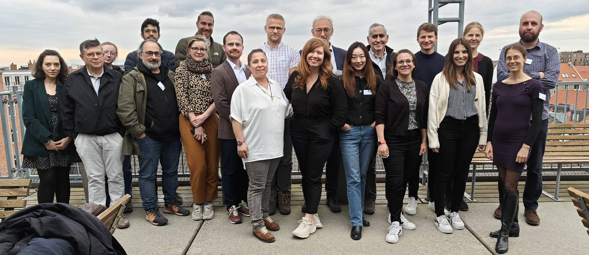

About the PREMIUM_EU Dashboard
Background
The PREMIUM_EU project is a Horizon Europe-funded research initiative (2023–2026) that set out to understand how mobility shapes the future of Europe's vulnerable regions and how it can be used strategically to counteract depopulation and regional decline.
This Dashboard is the culmination of three years of research by a multidisciplinary consortium working across nine countries and ten institutes. It brings together demographic analysis, migration studies, and regional development research in an accessible, interactive format. Our aim is simple: to ensure that research is not only understandable but also usable and adaptable by policymakers, planners, and regional stakeholders.
Methodology
The Dashboard was developed through a collaborative process involving all PREMIUM_EU project partners and a dedicated Dashboard Working Group. Our approach combined:
This co-creation approach ensured that the Dashboard reflects both robust scientific evidence and the practical needs of its end users.
For more detailed information about our research methods and data sources, visit our dedicated methodology page.
Who We Are
The Dashboard is coordinated by our communications and development team from Nordregio, and is a huge joint effort: data scientists and analysts built the models, researchers translated findings into actionable insights, and policymakers helped shape how those insights are presented. Together, we aim to bridge the gap between research and practice turning knowledge into tools that can help regions thrive.
The PREMIUM_EU project is coordinated by the Netherlands Interdisciplinary Demographic Institute (NIDI) and brings together ten partner institutions from across Europe, including leading universities, research institutes, and policy organisations. Our team includes experts in migration, demography, economics, sociology, and regional development, as well as practitioners experienced in policy design and stakeholder engagement.
Q&A
Does the Dashboard give definitive policy answers?
No. The policy suggestions are illustrative, based on webscrapings of existing policies (not always directly migration or attraction based, but often a combination of the two), ideas and inspiration drawn from policylabs with regional decisionmakers from across Europe and initiatives/examples tested in local regions. The policy suggestions should therefore always be adapted to the specific political, economic, and cultural context of your region.
Where does the data come from?
The migration and regional development data come from a mix of national and international sources, each with its own definitions and collection methods. We have harmonised these datasets, supplemented them with Eurostat's statistics, and, in some cases, included novel sources such as social media data.
Are there any limitations to the data?
Yes. While harmonisation allows for cross-country comparison, some nuances and local details may not be fully captured. Migration data, in particular, depends on each country's definitions and reporting systems, which may differ significantly.
How current is the information?
All data reflects the most recent information available during the PREMIUM_EU project (2023–2026). The project funding ends in March 2026, which means updates will not continue beyond that date unless new funding is secured.
Can I rely on the Dashboard as my only source?
No. The Dashboard is a decision-support tool. It is best used alongside other local, national, and sector-specific information to design and implement effective policies.
